1b · Restliche Layouts — vollstaendiges Set
Gleiche Bausteine, andere Slot-Zahl. Geometrie 1:1 aus dem Design-A-Export uebernommen.
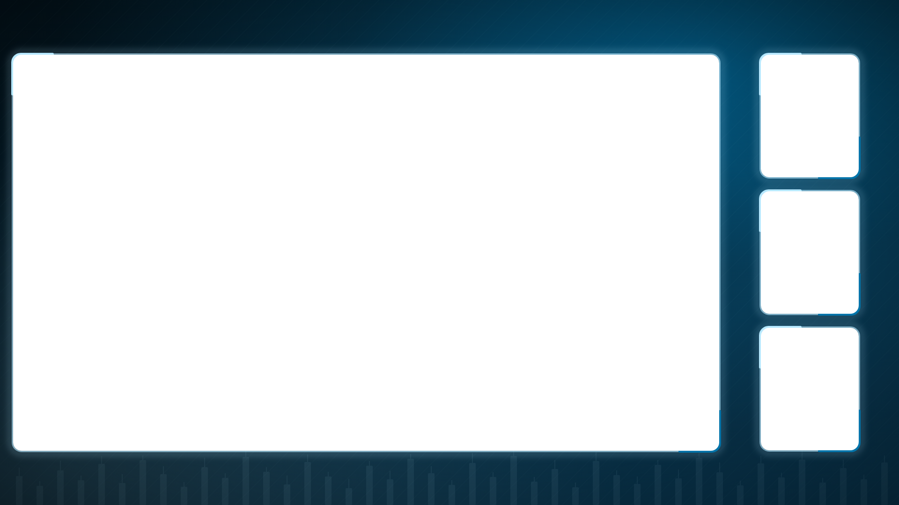
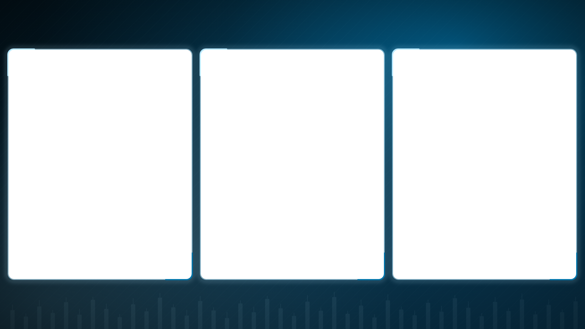
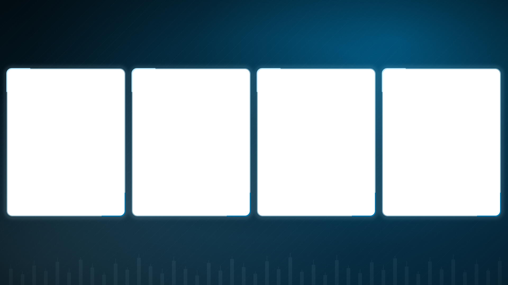
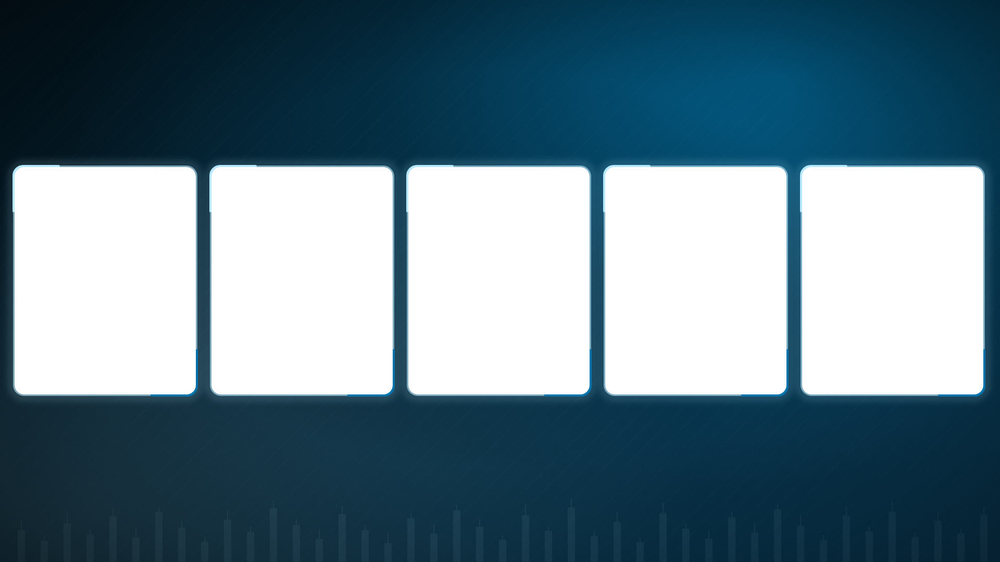


Zweites Layout-Set parallel zu Design-A. Slot-Geometrie 1:1 wie Design-A → später reiner Datei-Tausch in der OBS-Collection.
Die Löcher sind echt transparent — das Schachbrett dahinter zeigt, wo das Live-Bild durchkommt.
Kein Bild-Asset nötig, rein vektoriell: Blau-Verlauf, Lichtfeld in Main Blue, feine Kerzen-Silhouette unten. Rahmen in Light Blue, Eck-Akzente zweifarbig (oben-links Light Blue, unten-rechts Main Blue).
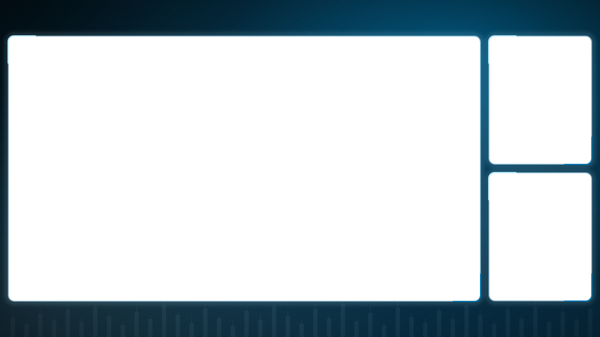
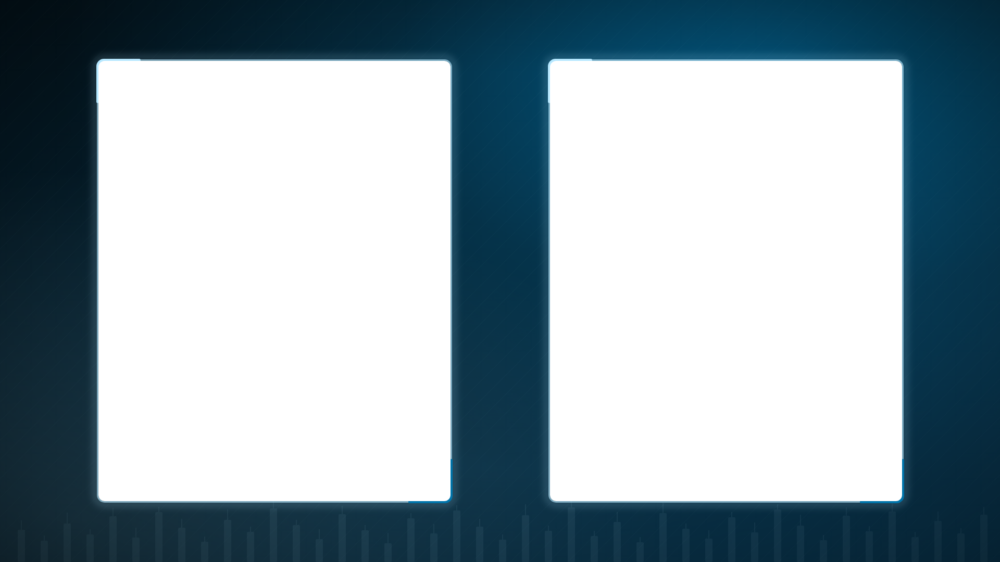
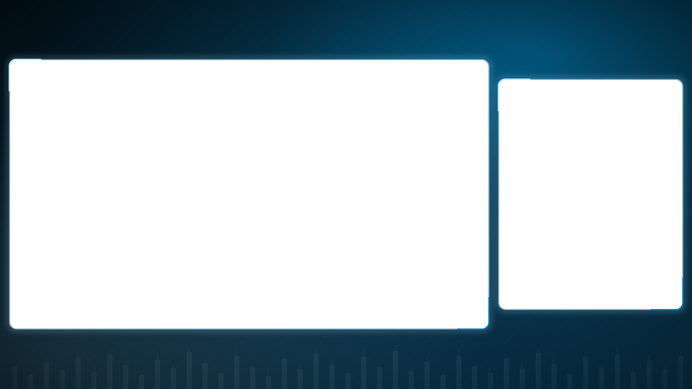
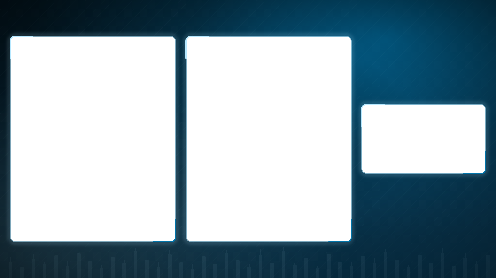
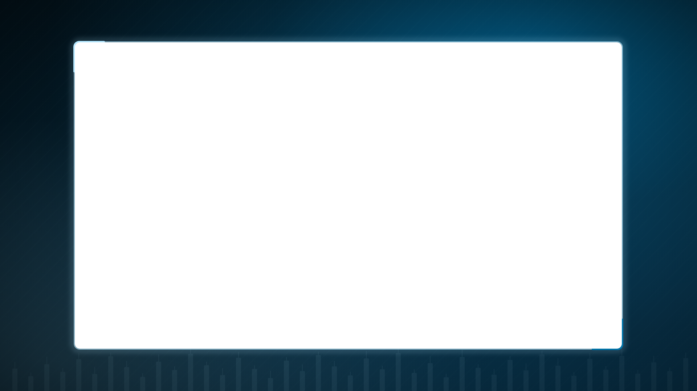
Gleiche Bausteine, andere Slot-Zahl. Geometrie 1:1 aus dem Design-A-Export uebernommen.




Foto + blauer Scrim statt gezeichneter Lichtfelder — dieselbe Mechanik wie Design-A (Hafen-Foto unter Scrim-Petrol).
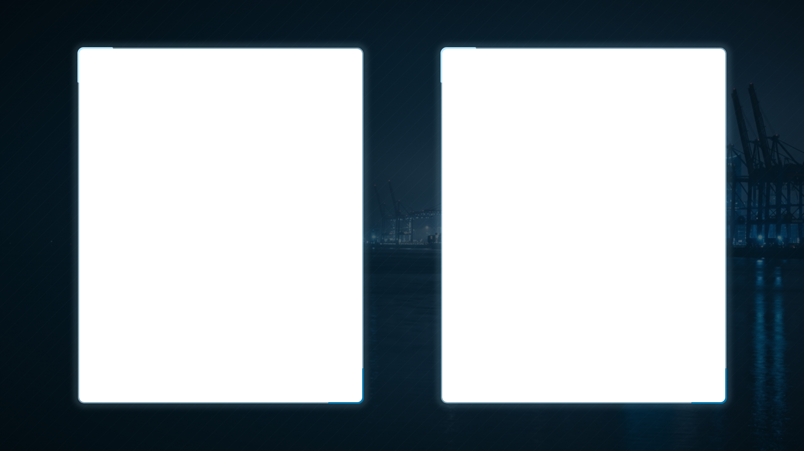
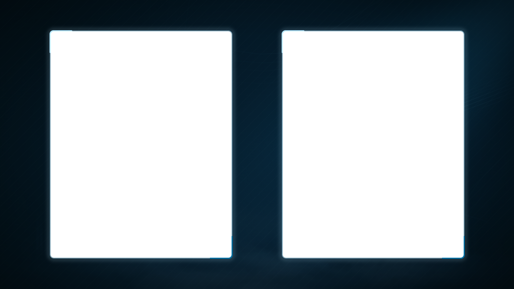
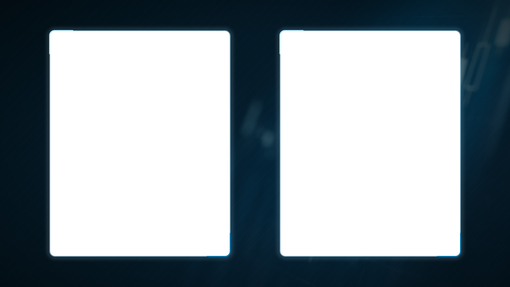
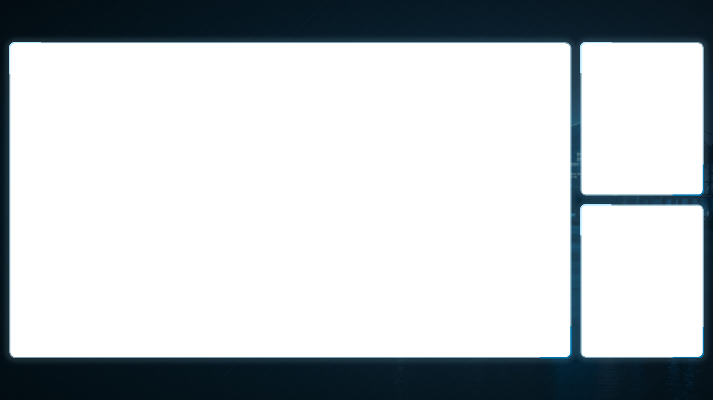
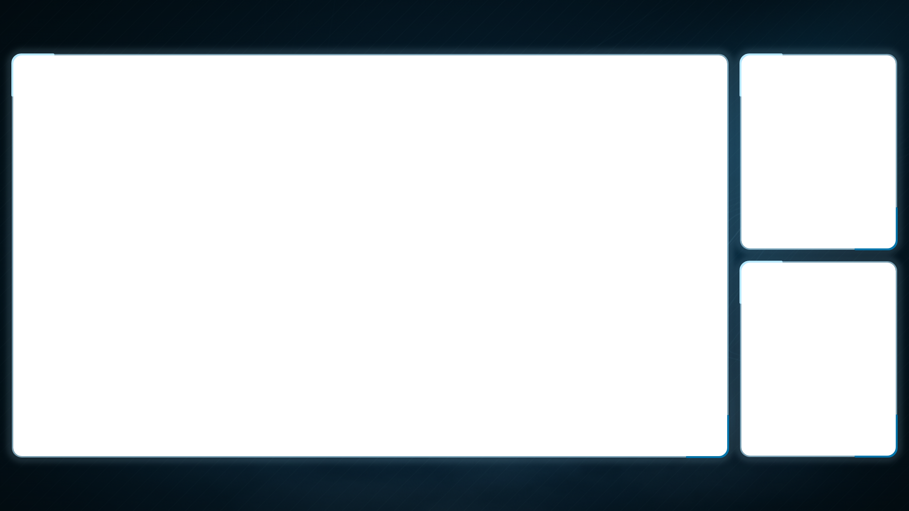
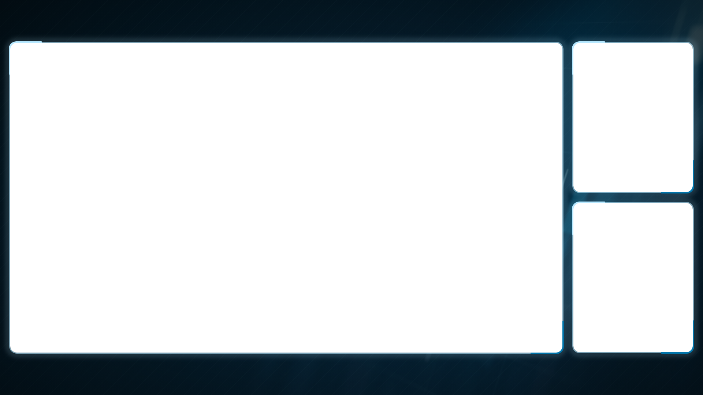
Wichtig für die Entscheidung: Beim Duo frisst der große Screen-Slot fast die ganze Fläche — vom Hintergrund bleibt nur ein schmaler Rand, egal welches Bild. Der Hintergrund entscheidet sich real an NoScreen-2P, Interview und dem Willkommens-Screen. Bei Design-A ist das genauso.
Voll deckend, keine Löcher. Gestrichelt unterstrichene Stellen sind Platzhalter (Titel, Datum, Referent) — kein Design-Element.
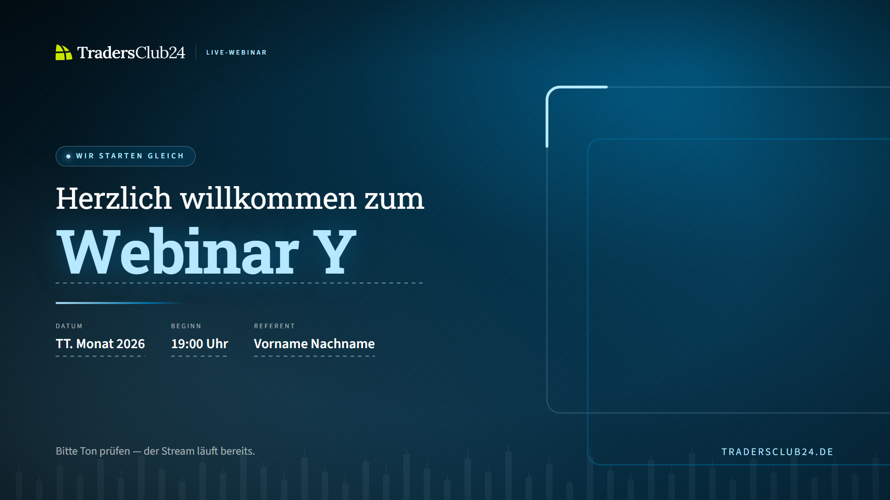
Erzeugt mit gemini-image im Standard-Tier (gemini-3.1-flash-image-preview), kein Premium. Nativ 1376×768 — der Gewinner wird für die Produktion in 1920×1080 neu gezogen.
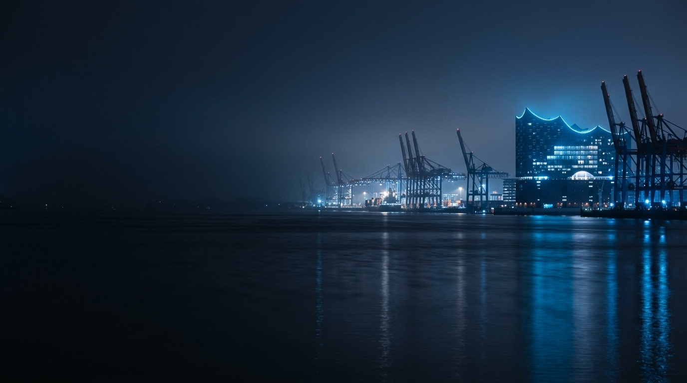
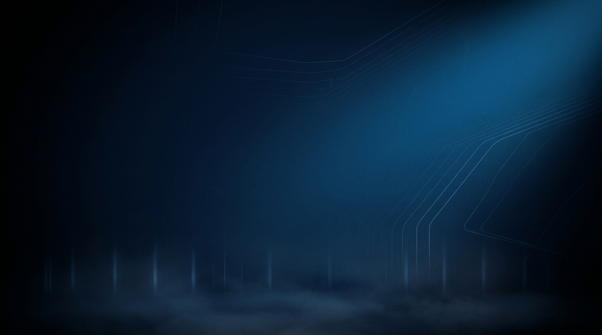